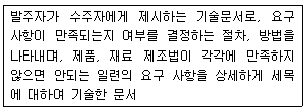
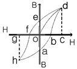

자기비파괴검사기능사 (2013-10-12 기출문제)
1과목: 자기탐상시험법
1. 방사선 투과사진의 상질을 개선시키는 방법이 아닌 것은?
- 선원-시험체간 거리를 증가시킨다.
- 미립자 필름을 사용한다.
- 선원 직경이 큰 것을 사용한다.
- 산란방사선을 감소시킨다.
(정답률: 42%)

2. 용제제거성 염색침투탐상검사에 대한 설명으로 옳은 것은?
- 현상법은 건식현상법으로만 적용한다.
- 잉여 침투액을 제거할 때 자외선조사장치를 사용한다.
- 사용하는 탐상제는 에어로졸 제품으로 제한되어 있다.
- 전원, 수도 등의 설비가 없이 검사가 가능하다.
(정답률: 77%)
3. 자분탐상검사에서 결함의 검출에 영향을 미치는 인자가 아닌 것은?
- 결함
- 시험면
- 자분의 적용
- 시험체의 밀도
(정답률: 75%)
4. 초음파탐상시 두께측정에 가장 적합한 시험방법은?
- 판파탐상법
- 수침법
- 공진법
- 횡파법
(정답률: 63%)
5. “금속학적 연속성이 파단되었음”을 나타내는 비파괴검사의 용어로 옳은 것은?
- 겹침
- 수축
- 이음매
- 불연속
(정답률: 86%)
6. 와전류탐상시험의 기본 원리로 옳은 것은?
- 누설흐름의 원리
- 전자유도의 원리
- 인장강도의 원리
- 잔류자계의 원리
(정답률: 81%)
7. 코일의 리액턴스가 50Ω이고, 도선의 저항이 23Ω 일 때 전압과 전류의 위상차는 얼마인가?
- 25°
- 35°
- 55°
- 65°
(정답률: 32%)
8. 할로겐 누설시험의 종류 중 가열양극법에 사용되는 가열양극의 할로겐 원소가 아닌 것은?
- Cl
- Na
- Br
- F
(정답률: 55%)
9. 다음 중 투자율의 국제표준단위는?
- [A/m]
- [H/m]
- [Wb/m2]
- [T]
(정답률: 52%)
10. 초음파탐상시험시 조정된 측정범위의 간격은 변화시키지 않고 에코 전체를 좌우로 이동시키는 손잡이는?
- 스윕지연(sweep delay)
- 펄스에너지(pulse energy)
- 스윕거리(sweep length)
- 게인(gain)
(정답률: 50%)
11. 각종 비파괴검사에 대한 설명 중 옳은 것은?
- 자분탐상시험은 일반적으로 핀홀과 같은 점모양의 검출에 우수한 검사법이다.
- 초음파탐상시험은 두꺼운 강판의 내부결함 검출이 방사선투과시험보다 우수하다.
- 침투탐상시험은 검사할 시험체의 온도와 침투액의 온도에 거의 영향을 받지 않는다.
- 육안검사는 인간 시감을 이용한 시험으로 보어스코프나 소형 TV 등을 사용할 수 없어 파이프 내면의 검사는 할 수 없다.
(정답률: 56%)
12. 압력변화시험-가압법을 이용한 누설검사에서 검사오류를 발생시키는 두 원인은 무엇인가?
- 시험체의 체적-온도변화
- 시험체의 체적-압력변화
- 압력-시험기간
- 압력-온도변화
(정답률: 39%)
13. 침투탐상검사에 대한 설명이 틀린 것은?
- 1회의 탐상조작으로 탐상이 가능하다.
- 표면이 열려있는 결함만 검출이 가능하다.
- 결함의 시험체 내부 형상을 알 수 있다.
- 작업장소의 환기가 필요할 수 있다.
(정답률: 85%)
14. 선원의 강도가 50Ci인 방사성동위원소 Ir-192가 4반감 기가 경과했을 때 선원의 강도는 얼마가 되겠는가?
- 3.12Ci
- 6.25Ci
- 12.5Ci
- 25Ci
(정답률: 42%)
15. 시험체의 구멍 등에 철심을 통과시키고 이 철심에 교류자속을 흘림으로서 시험체 구멍 등의 주위에 원주방향으로 유도전류를 발생시켜 그 전류가 만드는 자계에 의하여 시험체를 자화시키는 방법은?
- 전류관통법
- 코일법
- 통전법
- 자속관통법
(정답률: 51%)
16. 자분탐상시험의 코일 내에서 자장이 가장 강한 곳은?
- 바깥 쪽 가장자리
- 끝 부분
- 안 쪽 가장자리
- 중심 부분
(정답률: 49%)
17. 자분탐상시험 중 극간법과 프로드법을 비교한 것이다. 틀린 것은?
- 극간법은 검사품의 표면에 스파크 등의 손상을 주지 않는다.
- 극간법은 자기회로를 강자성체로 적용시킬 수 있어서 반자계가 매우 작게 자화된다.
- 프로드법은 우너형자계를 형성하기 때문에 전극 간에 수직으로 놓인 결함이 가장 잘 나타난다.
- 프로드법은 검사품에 직접 전류를 적용하므로 전극을 잘 접촉시켜야 한다.
(정답률: 44%)
18. 자분탐상시험시 주의해야 할 사항으로 옳은 것은?
- 비형광자분탐상시험은 어두워야 하므로 모든 빛을 차단하여야 한다.
- 자외선은 인체의 눈에 치명적 손상을 주므로 시험체를 직접 눈으로 관찰하는 것은 금지되어야 한다.
- 가연성 물질을 사용하므로 항상 추운곳에서 검사를 실시해야 한다.
- 탐상장치의 전기회로에 대한 절연 여부를 일상 점검하여야 한다.
(정답률: 73%)
19. 말굽형 영구자석을 사용하여 자분탐상검사를 할 때의 특징을 설명한 것으로 옳은 것은?
- 일정한 자속밀도를 유지하므로 전자석보다 검출능력이 높다.
- 시험체에 대한 자속의 유입 깊이가 교류에 비해 깊으므로 내부에 있는 결함 탐상에 가장 적합하다.
- 교류 전자석을 이용하는 자화기와 동일하게 시험면에 대한 자속밀도가 높아 표면 결함의 검출이 우수하다.
- 시험체의 두께가 두꺼울수록 시험면의 자속밀도가 급격히 감소되어 결함의 검출능력은 저하된다.
(정답률: 53%)
20. 다음은 어떤 문서에 대한 설명인가?

- 지시서
- 절차서
- 시방서
- 보고서
(정답률: 58%)
2과목: 자기탐상관련규격
21. 탈자를 하지 않아도 되는 경우의 설명으로 틀린 것은?
- 검사 후 열처리가 예정되어 있는 경우
- 연강이나 연철인 시험체의 보자성이 높을 경우
- 재시험을 하는 공정이 계획되어 있을 경우
- 시험체를 전자석 기중기로 들어올려 운반할 경우
(정답률: 48%)
22. 자분탐상시험시 장치, 자분, 검사액의 성능만을 확인하고자 할 때 사용되는 시험편은?
- A형 표준시험편
- B형 표준시험편
- C형 표준시험편
- D형 표준시험편
(정답률: 57%)
23. 자분탐상시험에서 A1형 표준시험편의 용도와 사용방법이 잘못 설명된 것은?
- 시험편의 표시 숫자 중 분자는 인공흠의 깊이이고 분모는 시험편의 두께이다.
- 인공흠은 원형자화 시에 다소 높은 검출감도를 나타낸다.
- 인공흠이 있는 쪽 면은 검사품의 표면에 부착시켜야 한다.
- 시험편을 사용할 때와 동등한 조건으로 검사품을 검사하여야 한다.
(정답률: 45%)
24. 그림의 자기이력곡선에서 포화점을 나타낸 것은?

- b, f
- d, h
- e, a
- o, b
(정답률: 78%)
25. 시험체가 축통전법(Head shot)에 의해 자화될 때 자속밀도가 최대가 되는 곳은?
- 시험체의 중심
- 시험체의 내측
- 시험체의 표면
- 시험체의 양끈
(정답률: 47%)
26. 다음 중 자화방법에 대한 설명으로 틀린 것은?
- 프로드법에서의 전류는 시험체의 두께와 프로드 전극의 간격으로 정해진다.
- 코일법은 코일에 전류를 통할 때에 발생하는 코일의 축방향의 자계를 이용한다.
- 통전법에서는 직류나 정류전류를 사용하며 시험체의 내경을 기준으로 전류치를 설정한다.
- 극간법에서는 자화시 영구자석과 전자석을 사용한다.
(정답률: 48%)
27. 자분탐상시험시 자화할 때 고려되어야 할 사항으로 가장 중요한 것은?
- 전류의 종류
- 전류의 밀도
- 자계의 방향
- 부품의 크기
(정답률: 64%)
28. 철강재료의 자분탐상 시험방법 및 자분모양의 분류(KS D 0213)에 따라 형광자분을 사용할 때 자분지시 모양을 충분히 식별하기 위한 관찰면의 밝기는 몇 lx 이하로 하여야 하는가?
- 2
- 20
- 200
- 2000
(정답률: 85%)
29. 철강재료의 자분탐상 시험방법 및 자분모양의 분류(KS D 0213)의 자분탐상시험 장치 중에서 자분 및 검사액에 대하여 바르게 설명한 것은?
- 검사액 및 자분은 필요에 따라 버너로 태워서 그 성능을 확인하여야 한다.
- 자분의 입도는 육안으로 측정하여 입자의 크기를 대, 중, 소로 표시하여 기록해 둔다.
- 검사액속의 자분 분산농도는 자분의 무게를 단위용적으로 나눈 값으르 말하며 %로 표시한다.
- 습식법에는 등유, 물 등을 분산매로 하여 필요에 따라 적당한 방청제 및 계면활성제를 넣은 검사액을 사용한다.
(정답률: 75%)
30. 철강재료의 자분탐상 시험방법 및 자분모양의 분류(KS D 0213)에 따른 자화전류와 자분 분산매의 조합 중 표면하의 불연속 검출에 가장 우수한 검출강도를 갖는 방법은?
- 교류-습식법
- 교류-건식법
- 맥류-습식법
- 적류-건식법
(정답률: 34%)
31. 철강재료의 자분탐상 시험방법 및 자분모양의 분류(KS D 0213)에서 규정한 A1 표준시험편의 재질은?
- KS C 2504의 1종을 어닐링한 것
- KS C 2504의 2종의 압연재(냉간 압연)
- KS C 2712의 1종을 압연재(냉간 압연)
- KS C 2712의 2종을 어닐링한 것
(정답률: 66%)
32. 다음 중 자분탐상검사 방법의 규격이 아닌 것은?
- KS D 0213
- ASME sec.Ⅷ Div. 1App 6
- KS W 4041
- KS D 0232
(정답률: 43%)
33. 철강재료의 자분탐상 시험방법 및 자분모양의 분류(KS D 0213)에 의한 자분탐상시험시 다음 중 의사모양의 하나인 재질경계지시가 예상되는 시험부위는?
- 단면급변부
- 띠모양으로 존재하는 금속조직부
- 자기펜 자국부
- 거친 표면부
(정답률: 45%)
34. 철강재료의 자분탐상 시험방법 및 자분모양의 분류(KS D 0213)에 규정된 “원형상의 자분모양”에 대한 설명으로 옳은 것은?
- 독립하여 존재하며 선상의 자분모양 이외의 것을 말한다.
- 독립하여 존재하며 자분모양의 길이가 나비의 4배 이상인 것을 말한다.
- 일정한 면적 내에 여러 개의 자분이 원형에 가깝게 군집되어 있는 것을 말한다.
- 균열로 식별된 자분모양이 아닌 모든 것을 말한다.
(정답률: 53%)
35. 철강재료의 자분탐상 시험방법 및 자분모양의 분류(KS D 0213)에 따라 시험조건의 기호를 기록할 때 “P-1000Ⓓ"에 대한 설명이 바르게 짝지어진 것은?
- P : 극간법 사용
- - : 교류전압을 사용
- 1000 : 시험길이가 1000mm
- Ⓓ : 탈자를 시행
(정답률: 66%)
36. 압력 용기-비파괴 시험 일반(KS B 6752)의 홀-효과 접선 자장 프로브의 사용 용도는?
- 최대 자회전류값 측정
- 강자성체의 유무판단
- 접선 자장의 피크값 측정
- 자화방향 측정
(정답률: 50%)
37. 철강재료의 자분탐상 시험방법 및 자분모양의 분류(KS D 0213)에서 “현탁성이 좋다”는 의미의 설명으로 옳은 것은?
- 입자의 침강 속도가 빠르다.
- 침전되지 않은 입자량이 많다.
- 검사액의 밀도가 낮아 투명하다.
- 검사액의 색깔이 밝고 깨끗하다.
(정답률: 69%)
38. 철강재료의 자분탐상 시험방법 및 자분모양의 분류(KS D 0213)에서 강자성체에 본래의 자화와는 반대 방향의 자장을 주든가 또는 열을 가하여 자화를 충분히 작은 값으로 감소시키는 일을 설명하는 용어는?
- 역자화
- 탈자
- 리젝션
- 자기포화
(정답률: 75%)
39. 철강재료의 자분탐상 시험방법 및 자분모양의 분류(KS D 0213)에서 자화할 때 고려하여야 할 내용을 옳게 설명한 것은?
- 반자계를 크게 하여야 한다.
- 자계의 방향은 시험할 면과 가능한 한 수직이 되게 한다.
- 자계의 방향은 예측되는 흠의 방향에 대하여 가능한 한 수평으로 한다.
- 시험면을 태워서는 안될 경우 시험체에 직접 통전하지 않는 자화방법을 선택하는 것이 좋다.
(정답률: 45%)
40. 철강재료의 자분탐상 시험방법 및 자분모양의 분류(KS D 0213)의 A2 표준시험편을 바르게 설명한 것은?
- A1보다 높은 유효자계의 강도로 자분모양이 나타난다.
- A1보다 낮은 유효자계의 강도로 자분모양이 나타난다.
- A1과 A2는 자계와는 상관없다.
- A2는 잔류법으로, A1은연속법을 사용한다.
(정답률: 63%)
3과목: 금속재료일반 및 용접일반
41. 철강재료의 자분탐상 시험방법 및 자분모양의 분류(KS D 0213)에 규정한 비형광 습식법의 자분농도 범위는?
- 0.2~2g/ℓ
- 0.02~0.2g/ℓ
- 2~10g/ℓ
- 10~20g/ℓ
(정답률: 49%)
42. 철강재료의 자분탐상 시험방법 및 자분모양의 분류(KS D 0213)에 의한 자계강도의 설정을 바르게 적용한 것은?
- 연속법/용접부 : 1000(A/m) 이하
- 연속법/단조품 : 2000(A/m) 이하
- 연속법/퀀칭한 기계부품 : 5600(A/m) 이상
- 잔류법/퀀칭한 부품 : 5000(A/m) 이상
(정답률: 67%)
43. 1성분계 상태도에서 3중점에 대한 설명으로 옳은 것은?
- 세 가지 기압이 겹치는 점이다.
- 세 가지 온도가 겹치는 점이다.
- 세 가지 상이 같이 존재하는 점이다.
- 세 가지 원소가 같이 존재하는 점이다.
(정답률: 83%)
44. 알루미늄합금 중 시효처리에 의해 석출경화를 이용하는 열처리형 합금이 아닌 것은?
- 2000계
- 3000계
- 6000계
- 7000계
(정답률: 42%)
45. 형상 기억 효과를 나타내는 합금이 일으키는 변태는?
- 펄라이트 변태
- 마텐자이트 변태
- 오스테나이트 변태
- 레데뷰라이트 변태
(정답률: 60%)
46. 금속 재료의 일반적 성질에 관한 설명으로 틀린 것은?(오류 신고가 접수된 문제입니다. 반드시 정답과 해설을 확인하시기 바랍니다.)
- Mg의 용융점은 약 850℃이다.
- Al의 비중은 약 2.7로 물속으로 가라앉는다.
- 열전도도가 우수한 금속은 Ag ＞ Cu ＞ Au 순이다.
- 물질이 상태의 변화를 완료하기 위해서는 잠열이 필요하다.
(정답률: 38%)
47. Al-Si 계 합금에 관한 설명으로 틀린 것은?
- Si 함유량이 증가할수록 열팽창계수가 낮아진다.
- 실용합금으로는 10~13%의 Si가 함유된 실루민이 있다.
- 용융점이 높고 유동성이 좋지 않아 복잡한 모래형 주물에는 이용되지 않는다.
- 개량처리를 하게 되면 용탕과 모래 수분과의 반응으로 수소를 흡수하여 기포가 발생된다.
(정답률: 71%)
48. Ni에 약 50~60%의 CU를 첨가하여 표준 저항선이나 열전 쌍용선으로 사용되는 합금은?
- 엘린바
- 모넬메탈
- 콘스탄탄
- 플래티나이트
(정답률: 72%)
49. 융액(L1)→결정(M)+융액(L2)와 같은 반응을 하며, 해진 온도에서 3상이 평형을 이루는 상태는?
- 공정형
- 포정형
- 편정형
- 금속간 화합물형
(정답률: 31%)
50. 다음 중 소결 탄화물 공구강이 아닌 것은?
- 듀콜(Ducole)강
- 미디아(Midia)
- 카볼로이(carboloy)
- 텅갈로이(Tungalloy)
(정답률: 48%)
51. 조직검사를 통한 상이 종류 및 상의 양을 결정하는 방법이 아닌 것은?
- 면적의 측정법
- 점의 측정법
- 직선의 측정법
- 셀퍼프린터의 측정법
(정답률: 62%)
52. 뜨임 취성을 방지할 목적으로 첨가되는 합금원소는?
- Al
- Si
- Mn
- MO
(정답률: 47%)
53. 18-8 스테인리스강에 대한 설명으로 틀린 것은?
- 강자성체이다.
- 내식성이 우수하다.
- 오스테나이트계이다.
- 18%Cr-08%Ni의 합금이다.
(정답률: 62%)
54. 6:4 황동에 1~2%Fe을 첨가한 것으로 강도가 크고 내식성이 좋아 광산기계, 선박용기, 화학기계 등에 널리 사용되는 것은?
- 포금
- 문쯔메탈
- 규소황동
- 델타메탈
(정답률: 42%)
55. 주철 중에 나타나는 탄소량은 주로 어떤 형태인가?
- 인(p)+흑연
- 흑연+화합탄소
- 망간(Mn)+화합탄소
- 텅스텐(w)+화합탄소
(정답률: 59%)
56. 백금(pt)의 결정격자는?
- 정방격자
- 면심입방격자
- 조밀육방격자
- 체심입방격자
(정답률: 52%)
57. 다음 중 연강의 탄소함량은 약 몇 %인가?
- 0.14
- 0.45
- 0.55
- 0.85
(정답률: 55%)
58. 다음 중 산소-아세틸렌가스 용접 작업할 때 가스용접 토치에서 탁탁 소리가 나는 원인으로 가장 적합한 것은?
- 모재의 과열
- 노즐(팁)의 막힘
- 가스 압력의 조정 불량
- 혼합가스의 배출이 불완전
(정답률: 40%)
59. 다음 중 용접법에 있어 압접에 속하는 것은?
- 단접
- 스터드 용접
- MIG 용접
- 전자 빔 용접
(정답률: 39%)
60. 정격 2차 전류가 200A, 정격 사용률이 40%인 아크 용접기로 200A의 용접전류를 사용하는 경우 허용 사용률은 얼마인가?
- 20%
- 40%
- 80%
- 160%
(정답률: 64%)